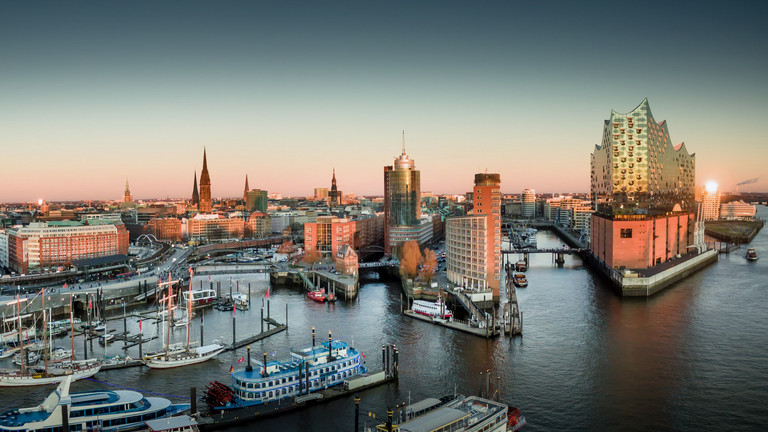

Plan:
- Avreise fra Notodden på morgenen.
- Ferge fra Larvik til Hirtshals.
- Kjøring gjennom Danmark til Hamburg.
- Innsjekk, enkel middag og et par øl.
Ca. kost (per pers, ekskl. fergebillett): Overnatting ~800–900 kr • Mat/øl ~400 kr.